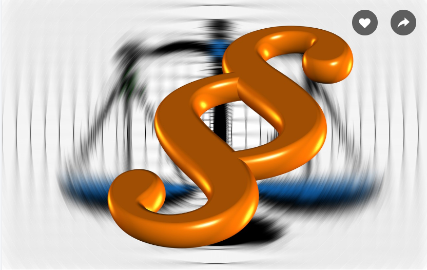

Я головний заголовок
Я параграф тексту. Я параграф тексту. Я параграф тексту. Я параграф тексту. Я параграф тексту. Я параграф тексту. Я параграф тексту. Я параграф тексту. Я параграф тексту. Я параграф тексту. Я параграф тексту. Я параграф тексту. Я параграф тексту. Я параграф тексту. Я параграф тексту. Я параграф тексту. Я параграф тексту. Я параграф тексту. Я параграф тексту. Я параграф тексту. Я параграф тексту. Я параграф тексту. Я параграф тексту. Я параграф тексту. Я параграф тексту. Я параграф тексту.
Я заголовок другого рівня
Знову Я, Я параграф тексту. Знову Я, Я параграф тексту. Знову Я, Я параграф тексту. Знову Я, Я параграф тексту. Знову Я, Я параграф тексту. Знову Я,Я параграф тексту. Знову Я, Я параграф тексту. Знову Я, Я параграф тексту. Знову Я, Я параграф тексту. Знову Я, Я параграф тексту. Знову Я, Я параграф тексту. Знову Я, Я параграф тексту.Знову Я, Я параграф тексту.Знову Я, Я параграф тексту.Знову Я, Я параграф тексту.Знову Я, Я параграф тексту. Знову Я, Я параграф тексту. Знову Я, Я параграф тексту. Знову Я, Я параграф тексту. Знову Я, Я параграф тексту. Знову Я, Я параграф тексту. Знову Я, Я параграф тексту. Знову Я, Я параграф тексту. Знову Я, Я параграф тексту.
І знову це Я, Я той самий параграф тексту. Я параграф тексту. Я параграф тексту. Я параграф тексту. Я параграф
тексту. Я параграф тексту. Я параграф тексту.
Я параграф тексту. Я параграф тексту. Я параграф тексту. Я
параграф
тексту. Я параграф тексту. Я параграф тексту. Я параграф тексту. Я параграф тексту. Я параграф тексту. Я
параграф
тексту. Я параграф тексту. Я параграф тексту. Я параграф тексту. Я параграф тексту. Я параграф тексту. Я
параграф
тексту. Я параграф тексту.
- Я пункт
- Я пункт
- Я пункт
- Я пункт
- А Я підпункт
- Я теж підпункт
- І Я теж підпункт
- А Я вже підпункт підпункта
- І Я теж підпункт підпункта
- Я пункт
- Я пункт
А Я вже заголовок третього рівня
Привіт це знову Я. Я параграф. Я параграф. Я параграф. Я параграф. Я параграф. Я параграф. Я параграф. Я параграф. Я параграф. Я параграф. Я параграф. Я параграф. Я параграф. Я параграф. Я параграф. Я . Я параграф. Я параграф. Я параграф. Я параграф. Я параграф. Я параграф. Я параграф. Я параграф. Я параграф. Я параграф. Я параграф. Я параграф. Я параграф. Я параграф. Я параграф. Я параграф. Я параграф. Я параграф. Я параграф. Я параграф. Я параграф. Я параграф. Я параграф. Я параграф. Я параграф. Я параграф. Я параграф. Я параграф. Я параграф. Я параграф. Я параграф. Я параграф. Я параграф. Я параграф. Я параграф. Я параграф. Я параграф. Я параграф. Я параграф.
- Я пункт нумерований
- Я теж пункт нумерований
- І Я пункт нумерований
- І знову Я пункт нумерований
- А тепер Я підпункт нумерований
- Я так само підпункт нумерований
- Так Я теж підпункт нумерований
- Ні це Я підпункт нумерований
- О Я став підпунктом підпункта нумерованого
- Як це? Я теж став підпунктом підпункта нумерованого
- А ну годі! Я підпункт підпункта нумерованого!
- Я знову пункт нумерований
- Як це сталося? Чому Я знову пункт нумерований
Я став заголовком четвертого рівня
О боже, це знову Я.Я той самий параграф. Я той самий параграф. Я той самий параграф. Я той самий параграф. Я той самий параграф. Я той самий параграф. Я той самий параграф. Я той самий параграф. Я той самий параграф. Я той самий параграф. Я той самий параграф. Я той самий параграф. Я той самий параграф.